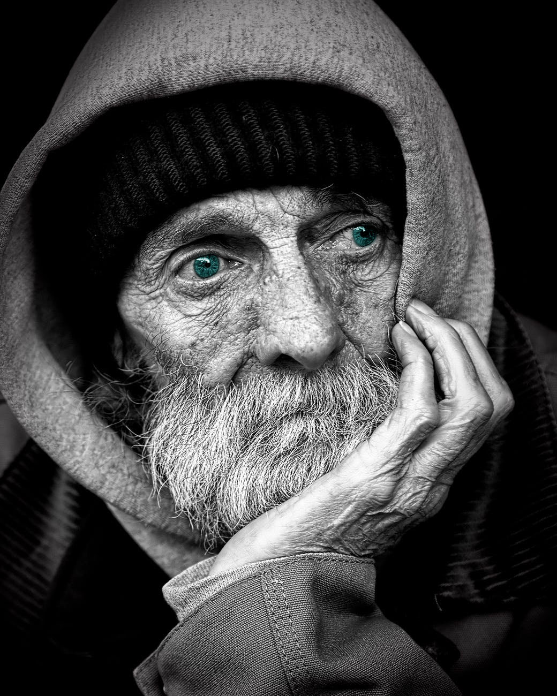

John Cook
Photographe


Un langage pour le photographe
Le Noir et Blanc accroche les lumières, met les lignes en valeur et donne une dimension intemporelle et poétique. C‘est un vrai choix esthétique et artistique. On ne fait pas la même photographie en couleur et en Noir et Blanc et il est important d'anticiper à la prise de vue le rendu d'une photographie en Noir et Blanc ou en couleur. Les photos couleur et noir et blanc se pensent différemment. Il faut d'abord penser à sa photo avant de photographier. Le Noir et Blanc est une pratique qui me permet d'exprimer ma vision personnelle. Il tend vers l'essentiel. La photographie noir et blanc a davantage de mystère, de poésie que la photographie couleur, elle a un pouvoir d'abstraction. La gestion des couleurs est parfois
Présentation
Auteur-Photographe basé à Lyon, je développe en parallèle une activité de photographe commercial, notamment au service desentreprises, et une démarche artistique personnelle qui m’a amené à exposer mes travaux dans de nombreux festivals ou galeries. Adepte de la photographie noir et blanc j'aime utiliser une touche de couleur pour mettre en avant un élément de la photo.
Actualité
Au travers de cette galerie, je partage mes dernières expériences photographiques où se mêlent reportages et portraits. Cette galerie retrace mes différents documentaires ainsi qu'une sélection de portraits de mes dernières séances que j'ai réalisé à Paris. Cette galerie permet de suivre mon actualité photographique et de cerner ma vision de photographe portraitiste et témoigne de ma sensibilité et de mon attachement à une image saisie sur le vif à la fois poétique et documentaire.
Une prestation adaptée à vos projets photographiques
Avec une démarche basée sur le photoreportage, je vous propose un autre regard sur la photographie de mariage et de portrait. Lors d'un reportage de mariage ou d'une séance de portrait, le photographe doit capter ou susciter les émotions qu'il souhaite traduire au travers de ses photographies. L'échange entre le photographe et les personnes photographiées est très important dans le reportage de mariage et la photographie de portrait et je cherche à aller au-delà de la simple relation client/prestataire. Je compte avant tout sur votre complicité pour réussir mes images. Dans la photographie de mariage et de portrait il est essentiel de prendre avant tout du plaisir à ce que l'on fait. Les photos sont en noir et blanc et couleur, j'accorde une importance particulière au post-traitement des photos, celles-ci sont toutes post-traitées une à une, ce qui sera déterminant pour le rendu final du reportage ou de la séance portrait. L'intension photographique se trouve aussi bien dans la prise de vue que dans le travail de laboratoire (traitement numérique), le travail de post-production permet au photographe de marquer l'image de son empreinte. Je propose des prestations personnalisables, à partir de 1750 € pour votre mariage, et 200 € pour une séance portrait.